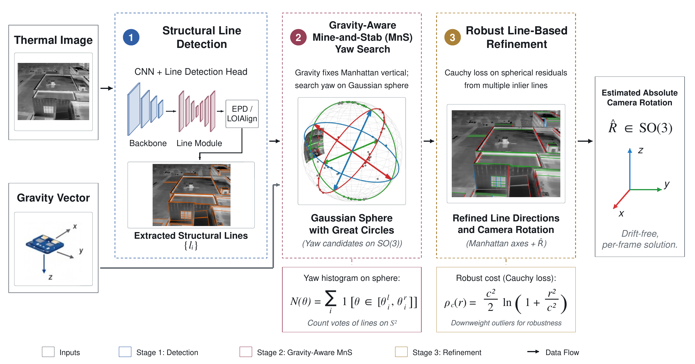
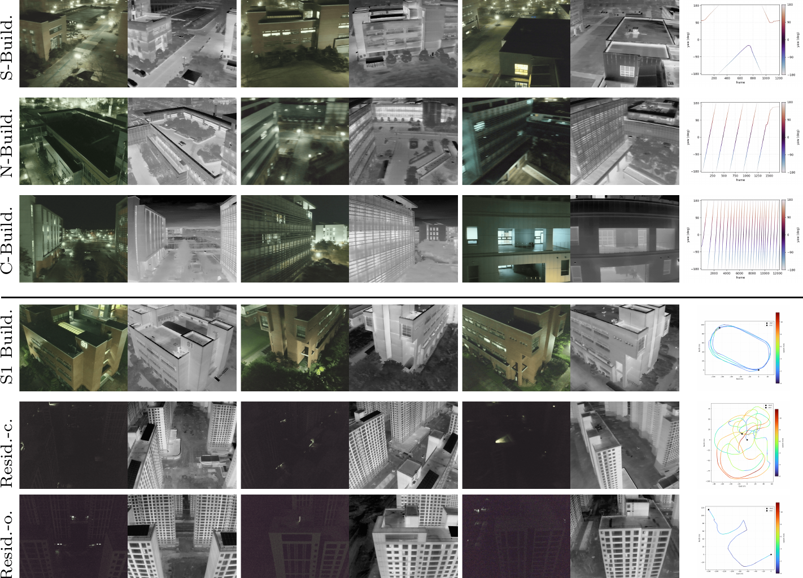

We present a drift-free, matching-free 3-DoF visual compass for monocular thermal imagery. Thermal cameras sense emitted radiation and operate regardless of illumination, but when surfaces reach thermal equilibrium, their texture vanishes, so point features collapse and the genuine, shape-preserving cues survive only as structural lines at object boundaries. Existing line-based thermal approaches still match lines across frames, where lines are not extracted consistently from frame to frame and tracking further degrades as the lines become too sparse. We instead avoid inter-frame line matching and, to the best of our knowledge, are the first to bring the Manhattan world (MW) assumption to thermal imagery, estimating the absolute camera orientation independently for every frame. Given a gravity vector from the drone, we recover the remaining heading angle (yaw) from structural lines, so each frame is fixed on its own and no drift accumulates across NUC drops or aggressive motion. We collect six outdoor man-made UAV sequences and, since structure-from-motion is unreliable on monocular thermal, build pseudo ground-truth (GT) trajectories with RTK-GPS priors. We publicly release this benchmark, the first paired RGB–thermal night-time UAV dataset under the MW assumption. On this benchmark, the proposed method outperforms existing rotation estimators and stays stable over 20+ rotational loops on which the onboard gyro integrates 15° of yaw drift at the end.

PLNet extracts structural lines from each thermal frame. The onboard gravity vector anchors the Manhattan vertical, and the Mine-and-Stab (MnS) search resolves the single remaining degree of freedom, yaw. A refinement step with a Cauchy loss on spherical line residuals then polishes the rotation. Every frame yields an absolute orientation on its own, so a NUC freeze or an aggressive maneuver affects only that frame and never propagates.

All six sequences of our benchmark. Each row shows representative RGB–thermal frame pairs. The last column depicts the camera motion: per-frame yaw profiles for the pure-rotation sequences (S-, N-, C-Buildings, top) and RTK-GPS trajectories color-coded by speed for the 6-DoF sequences (S1 Building, Residential-closed/opened, bottom).
Six paired RGB–thermal night-time sequences captured with a DJI Mavic 3T, recording thermal (640×512, DFOV 61°) and RGB (1920×1080, DFOV 84°) at 30 Hz, in man-made outdoor scenes spanning medium-dark to extreme-dark illumination and motion from pure rotation to full 6-DoF. Evaluation follows the motion regime: closed-loop consistency for the pure-rotation sequences, and RTK-GPS-anchored COLMAP pseudo-GT for the 6-DoF sequences. Calibration files are included.
| Sequence | Light | Motion | Time | Evaluation |
|---|---|---|---|---|
| S-Buildings | Medium dark | Pure rotation, slow | 40.4 s | Closed-loop consistency |
| N-Buildings | Medium dark | Pure rotation, fast, 5 loops | 57.7 s | Closed-loop consistency |
| C-Buildings | Medium dark | Pure rotation, dynamic, 20+ loops | 6 m 51 s | Closed-loop consistency |
| S1 Building | Medium dark | 6-DoF, mid-fast, circle a building | 10 m 17 s | RTK-GPS pseudo-GT |
| Residential-closed | Extreme dark | 6-DoF, fast, loop closure | 7 m 34 s | RTK-GPS pseudo-GT |
| Residential-opened | Extreme dark | 6-DoF, no loop | 5 m 48 s | RTK-GPS pseudo-GT |
The dataset is released under CC BY-NC-SA 4.0 for research use.
After 25 full rotations over 411 s on C-Buildings, our independently estimated per-frame orientations stay consistent with a closed-loop error of 0.287°, while the onboard gyro drifts by about 15° over the same loop.
ARE (°) by closed-loop consistency.
| Method | S-Build. | N-Build. |
|---|---|---|
| SuperPoint + GlueStick | 2.92 | 18.08 |
| SuperPoint + Line + GlueStick | 25.78 | 33.96 |
| U-ARE-ME | 8.14 | 27.05 |
| H-VP | 2.55 | 2.30 |
| 1-Line RANSAC* | 1.20 | 179.55 |
| MWMS | 0.33 | 1.20 |
| Ours | 0.58 | 0.62 |
ARE (°) against RTK-anchored pseudo-GT.
| Method | Resid.-closed | Resid.-opened | S1 Building |
|---|---|---|---|
| Rotation estimation | |||
| Point + GlueStick | 66.45 | 48.05 | 96.85 |
| Point / Line + GlueStick | 84.45 | 99.61 | 90.12 |
| U-ARE-ME | 38.98 | 3.70 | 5.94 |
| H-VP | 30.08 | 2.19 | 2.15 |
| 1-Line RANSAC* | 0.66 | 15.69 | 0.47 |
| MWMS | 0.97 | 1.10 | 0.73 |
| Ours | 0.42 | 0.70 | 0.44 |
| Classical feature-based SLAM | |||
| PL-SLAM | × | × | × |
| ORB-SLAM3 | 1.59† | × | 2.42† |
| Structure-PLP-SLAM | × | × | × |
| Learning-based dense SLAM | |||
| DROID-SLAM | 1.58† | 3.27† | 0.40 |
| HI-SLAM2 | 1.65 | 8.98† | 0.41 |
| Thermal-specific dense SLAM | |||
| PI-EAT-SLAM (Mono) | 112.29 | 7.22 | 2.87† |
Best per sequence in bold. Line-regularity methods (H-VP, 1-Line RANSAC*, MWMS, Ours) use the onboard gravity prior; other baselines take monocular thermal input only. *1-Line RANSAC: single-line solver with a confident gravity prior. ×: fails to initialize. †: ARE over the tracked subset only, before tracking failure.
@inproceedings{Shin_2026_ACCV,
title = {ThermalManhattan: Robust Thermal Compass under Radiometric Flatness in Manhattan World},
author = {Shin, Hyeonji and Kim, Junpyo and Kim, Pyojin},
booktitle = {Proceedings of the Asian Conference on Computer Vision (ACCV)},
month = {December},
year = {2026}
}